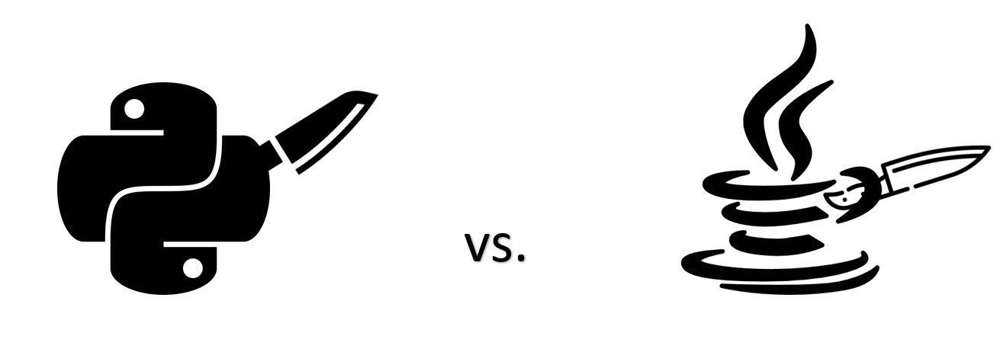
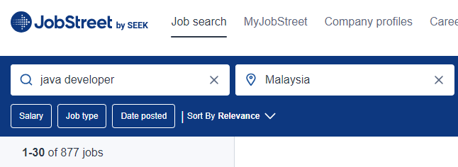
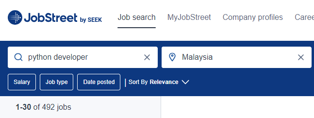

BATTLE OF THE CODES: PYTHON VS JAVA! (PART I)
In this section, we'll be comparing the less technical (a.k.a more trivial) aspects, namely popularity, number of job openings and learning curve. We will discuss the more technical aspects in Part II.
Aspect 1: Popularity
We know these two languages are really, really popular, but one of them has to have a slight edge over the other. Who takes the cake in terms of popularity, will it be Python, or Java?
The winner in the popularity category is... drumroll please.... Python!
Now, before all the Java fans throw hands, multiple sources back this claim up, namely Stack Overflow's Developer Survey 2023 and JetBrain's The State of Developer Ecosystem 2022. We will only discuss the former, as the results of both of these surveys produce the same winner.
According to
Stack Overflow's Developer Survey 2023, among the 87 585 respondents which include professional
developers, learners and hobbyist programmers, Python came in
third place in terms of popularity, with around 43 161
respondents (49.28%) reporting that they use Python regularly.
Java, on the other hand, came in 7th place, where 26 757
respondents (30.55%) frequently use Java.
The graphic below illustrates this point.
Aspect 2: Number of Job Openings
We all want to achieve financial security, right? Which programming language can help us achieve that goal faster, Python or Java? Let's see...
The winner, in terms of job openings in Malaysia, goes to... Java!
That's right! According to JobStreet, as of 19 September 2023, there are 877 job postings for Java developers, while Python trails with 492 job openings.


Aspect 3: Learning Curve
While learning curves are inherently not a deterrent to one's will to learn a programming language (take Assembly x86, for example), this information is especially helpful towards beginners who are just starting out.
It should come as no surprise that between Python and Java, Python has a less steep learning curve.
With a really straightforward and English-like syntax, most programmers agree that Python is really easy to learn. We will discuss both Python and Java's syntax in detail in Part 2.